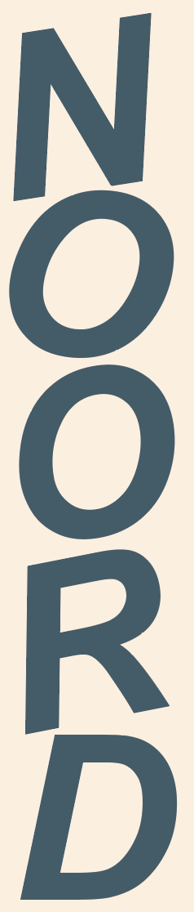

In Amsterdam is er een ruim aanbod aan plekken om tweedehands kleding te halen. Ik heb er per regio een aantal voor je op een rijtje gezet.
-

- Kringloopwinkel De Lokatie
- Het Goed Amsterdam Noord
- Kringloop De Loods
- Vintage Rebel
- IJ-hallen - Grote vlooienmarkt (afhankelijk van data en tijden)
- Stichting Kringloop Centrum
- Le Vintage
- Laura Dols
- De Kringwinkel
- Floortje - Vintage en tweedehands winkel
- Emmaus Feniks - Kringloopwinkel
- The Thrift Shop
- Stichting Kringloop de Binnenwaai
- Mooizo! - Vintage en tweedehands boetiek
- Episode - Tweedehands kledingwinkel
- Kringloopwinkel Het Goed Amsterdam-West
- Marbles Vintage
- De Ruilhoek
- Vintage Island
- Prisma Vlooienmarkt